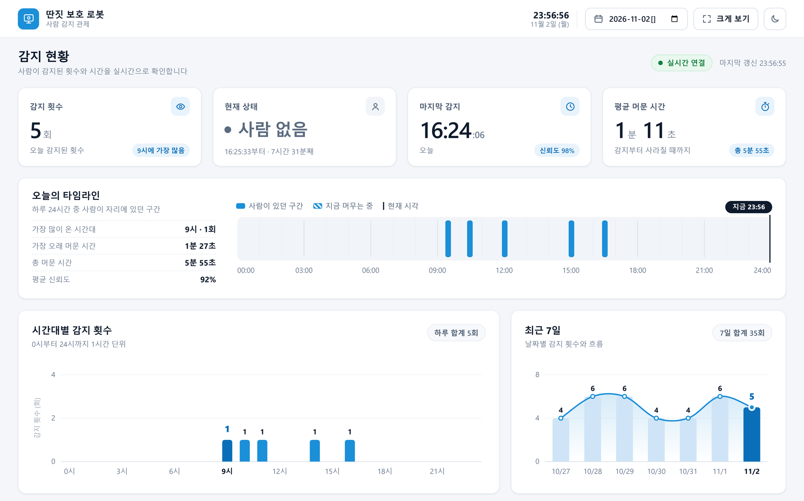
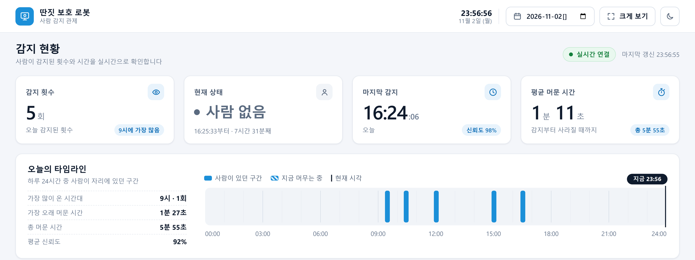
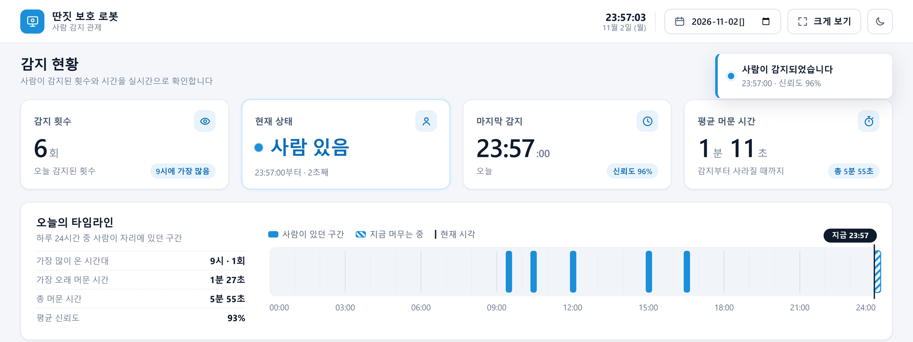
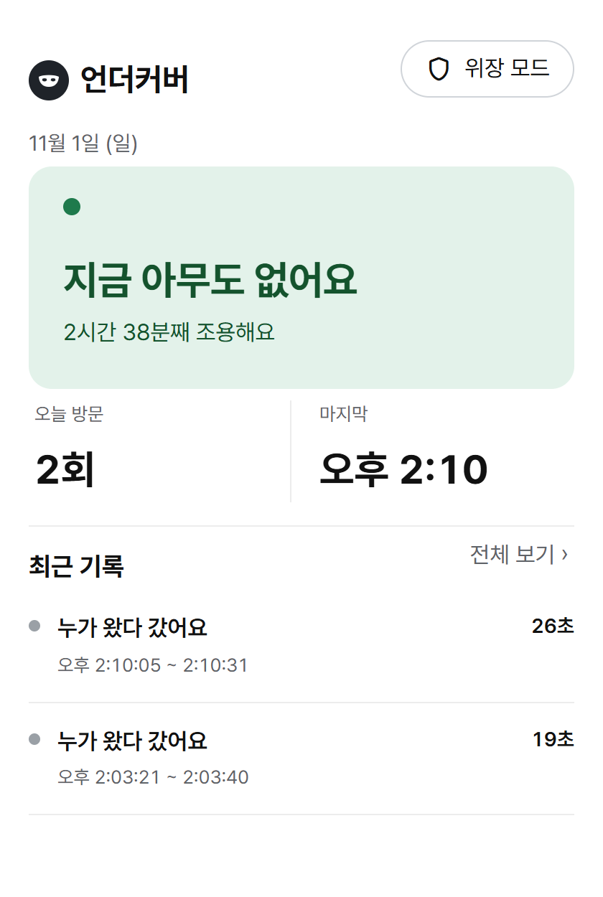
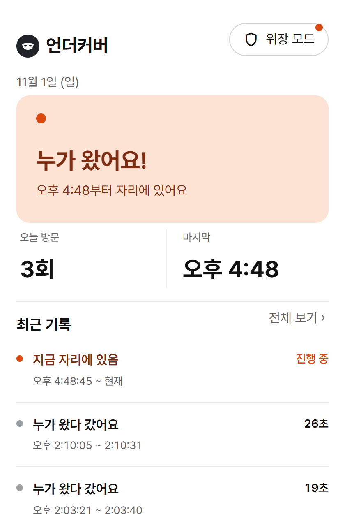
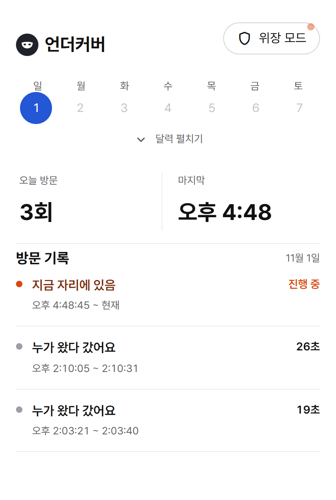
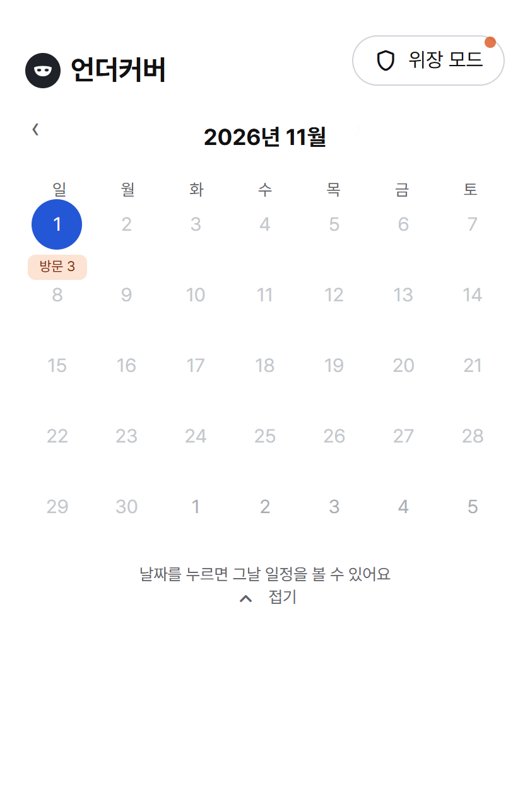
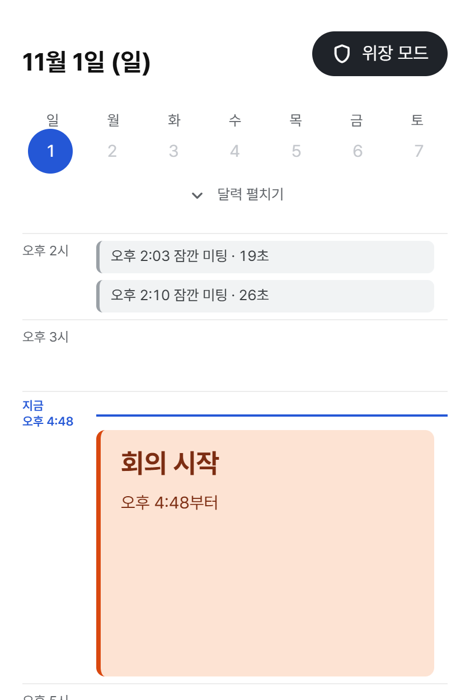
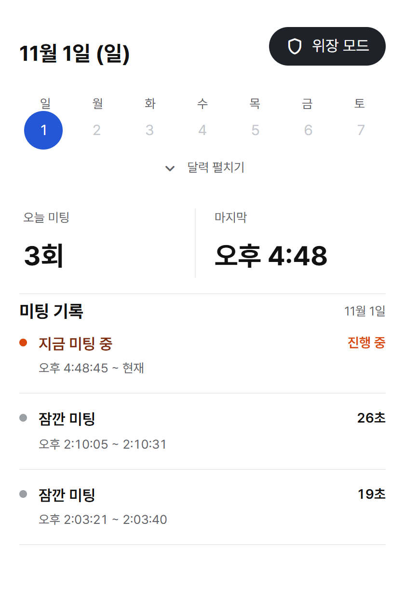

3팀 최종 발표 · 2026. 11. 3.
누가 다가오면 화면은 엑셀로, 로봇은 인사를
한웅 AI · 서버
유나 로봇 · 팀장
채웅 웹
채연 앱 · 발표
문제 의식
딴짓을 지키는 필수 스킬
누가 오는지 늘 살펴야 함
판단이 늦으면 들킴
그래서 만들었습니다
상사가 다가오면 로봇이 먼저 알아채고, 화면을 숨기고, 대신 인사합니다
시연 영상
1 노트북으로 딴짓 중
2 팀원이 라즈봇 쪽으로 다가옴
3 라즈봇이 감지하고 인사, 율동
4 화면이 엑셀로 바뀌고 인사 음성
파트 1 · 한웅 · 중앙 서버와 전체 구조
카메라 감지 · 유나
기록 저장 · 한웅
엑셀로 전환 · 채웅
알림 · 기록 · 채연
POST /api/events
감지 · 떠남 보냄
감지하면 그 자리에서
바로 인사
GET /api/status · 0.5초마다
GET /api/events · 2초마다
주황 화살표: 라즈봇이 서버에 보냄 · 회색 화살표: 웹과 앱이 서버에 물어봄
4
파트 2 · 유나 · 로봇
1
인사를 시작하고, 서버에 "사람 왔음"을 보내요
2
귀여운 치이카와 TTS로 인사를 전달해요!
3
도리도리, 끄덕끄덕, 두리번, 신나게 중 하나
메모
로봇에 자아 생성!
귀여운 치이카와 얼굴을 붙였어요
인사와 율동 약 3초 · 인사 뒤 10초는 다시 인사 안 함 · 인사 음성은 노트북에서 재생
5
파트 2 · 유나 · 어떻게 만들었나
1 보기
640 x 480 화면을 계속 읽음
2 판단
OpenCV로 돌려서 사람인지만 봄
3 기준
1초 보이면 감지, 1초 안 보이면 떠남
4 움직이기
I2C로 각도를 보내 30도에서 0도로, 2도씩
카메라 화면은 메모리에서만 보고 버림. 누구인지는 알아보지 않음
전원을 켜면 자동 실행(systemd), 멈추면 3초 뒤 다시 켜짐
라즈봇 V2 (라즈베리파이 5)
6
파트 3 · 채웅 · 웹 화면
엑셀 팝업이 전체 화면으로 뜨고, 사람이 가면 하던 창으로
셀 입력, 수식 계산, 리본 메뉴가 실제로 동작
브라우저 탭 제목과 아이콘까지 바뀜
상태 확인: 웹 화면 0.5초, 엑셀 팝업 0.1초마다
7
파트 3 · 채웅 · 대시보드
8

1
2
3
4
1 숫자 카드
횟수, 상태, 마지막 감지, 머문 시간
2 타임라인
사람이 있던 구간
3 그래프
시간대별, 최근 7일
4 위쪽 버튼
날짜, 크게 보기, 어두운 화면
+ 아래쪽
기록 표, 엑셀로 내보내기
화면 예시 (시험 데이터)
파트 3 · 채웅 · 대시보드
9
사람이 없을 때

사람이 왔을 때

1
2
3
4
1 알림
"사람이 감지되었습니다"가 5초 동안 뜸
2 현재 상태
"사람 없음" → "사람 있음", 카드 강조
3 마지막 감지
시각이 바뀌고 횟수 +1
4 타임라인
"지금 머무는 중" 빗금 막대
화면 예시 (시험 데이터)
홈 화면
기록 화면
파트 4 · 채연 · 앱 언더커버
10
초록 카드, 몇 분째 조용한지
2초 안에 주황 카드와 알림, 위장 모드 버튼에 주황 점
카드 아래에는 오늘 방문 횟수, 마지막 시각, 최근 기록 3개
앱 아래쪽 탭으로 홈 화면과 기록 화면을 오감

홈 화면 · 아무도 없음

홈 화면 · 누가 왔어요
홈 화면
기록 화면
파트 4 · 채연 · 앱 언더커버
11
온 시각부터 간 시각, 머문 시간. 지금 있으면 "진행 중"
달력을 펼치면 날짜마다 방문 횟수. 날짜를 누르면 그날 기록
서버의 "왔음", "갔음" 기록 2개를 방문 1번으로 묶어서 보여 줌

기록 화면 · 방문 기록

기록 화면 · 달력 펼치기
위장 모드
파트 4 · 채연 · 앱 언더커버
12
오른쪽 위 버튼 한 번이면 바뀌고, 다시 누르면 돌아옵니다
아무도 없음
집중 시간
누가 와 있음
회의 시작
왔다 감
잠깐 미팅
방문 기록
미팅 기록
사람이 와 있는데 위장 모드가 꺼져 있으면 버튼에 주황 점이 깜빡임

홈 화면 · 회의 시작

기록 화면 · 미팅 기록
어려웠던 점과 해결
팀원
막힌 곳
푼 방법
한웅
AI를 활용해 서버를 구축하고 환경을 설정하는 과정에서 기술적으로 막히고 어려웠던 부분이 많았다.
팀원들이 부족했던 부분을 적극적으로 도와주고 메꿔 준 덕분에, 무사히 문제를 해결하고 서버를 보수해 완성할 수 있었다.
유나
라즈봇 초기 설정과 오프라인 모임에서 핫스팟을 연결하는 과정이 어려웠다. 모터 커넥터를 잘못 연결해 라즈봇이 작동하지 않았고, 대전 모임에서는 집 Wi-Fi로 등록돼 있어 같은 이름으로 핫스팟을 켜도 연결되지 않았다.
연결 상태를 점검하고 라즈봇을 다시 조립했다. 핫스팟은 결국 OS를 재설치하고 다시 등록했다. 다행히 GitHub에 그동안 작업한 내용을 정리해 둔 덕분에 서버 구축과 설정을 빠르게 복구할 수 있었다.
채웅
대시보드 디자인이 상당히 어려웠다. AI에게 시키면 이모지, 특이한 도형 등을 있는 대로 다 넣어서 보기 불쾌한 대시보드가 완성됐다.
비슷한 사이트를 참고하고, 모든 AI에 디자이너 과장 역할을 줘서 피드백을 받았다. 그림판에 직접 그림을 그려 가며 배치도 조정해서 해결했다.
채연
아이디어를 구상할 때 사람의 신체를 기준으로 구상하다보니, 사람에게는 간단한 동작도 로봇에서는 구현하기 어려웠다. 로봇은 사람의 각 신체 기능에 해당하는 부품을 하나씩 따로 준비해야 한다는 한계가 있었다.
이후 아이디어를 짤 때 먼저 키트 부품을 확인하고, 할 수 있는 동작만 남겨 아이디어를 짰다.
본인 글 · 담당 파트가 아니어도 프로젝트에서 막힌 곳
13
깨달은 점과 소감
한웅 · 중앙 서버, 웹캠 AI
과제를 하며 피지컬 AI 기술이 실제로 어떻게 쓰이는지 체감했다. 이번에 다룬 감지와 제어 방식을 보며, 지금 관심 있는 농업 분야에 피지컬 AI를 접목해 스마트 농업 센서 시스템에 응용할 수 있겠다는 가능성을 느꼈다.
유나 · 로봇, 팀장
수업에서 배운 내용을 미니프로젝트로 직접 구현해 볼 수 있었다. 오프라인 통합 때 라즈봇이 네트워크에 연결되지 않았지만, GitHub에 정리해 둔 작업 기록 덕분에 빠르게 복구했다. 작업 과정을 기록하고 관리하는 게 문제 해결에 큰 도움이 된다는 걸 배웠다.
채웅 · 웹 화면, 대시보드
노션으로 계획을 세우고 GitHub로 역할을 나눠 작업하니, 서로의 영역을 침범하지 않고 맡은 역할을 효율적으로 끝낼 수 있었다. 바이브 코딩으로 머릿속 구상을 직접 실현해 보며 재미와 성취감을 느꼈고, 여기서 익힌 AI 활용 능력이 남들과 다른 경쟁력이 될 수 있겠다고 생각했다.
채연 · 앱, 발표
로봇은 설계하는 것이 말로는 쉬워 보여도 실제로는 절대 쉽지 않았다. 말로는 1 → 2 → 3이지만, 프로그램은 1과 2 사이의 1.1, 1.21까지 챙겨야 맞물려 돌아간다. 그래도 여러 번 고친 끝에 생각한 대로 나왔을 때 뿌듯했다.
딴짓 보호 로봇 · 3팀
14
딴짓 보호 로봇 · 3팀
질문 받겠습니다
github.com/una8860-rgb/Team_Project-team3